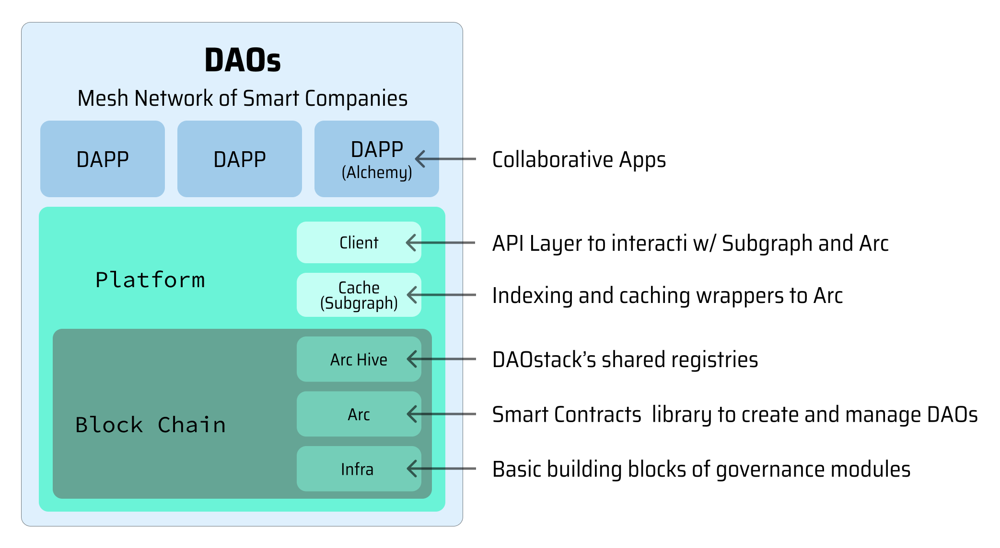

DAOstack
DAOstack provides everything you need to start managing your community without a centralized authority. Launch your DAO - Decentralized Autonomous Organization using Adaptive, Modular and Upgradable governance structures powered by, DAOstack, a software stack for building Dapps (decentralized apps), DAOs (Decentralized Autonomous Organizations), and DAO tools.

A dApp build with DAOstack DAOs consists of:
- Public blockchain layer (Infra, Arc, Arc-Hive) which is the source of data
- Caching layers (Subgraph) which allows fast access to the blockchain layer
- Javascript library (Arc.js) for application layer integration.